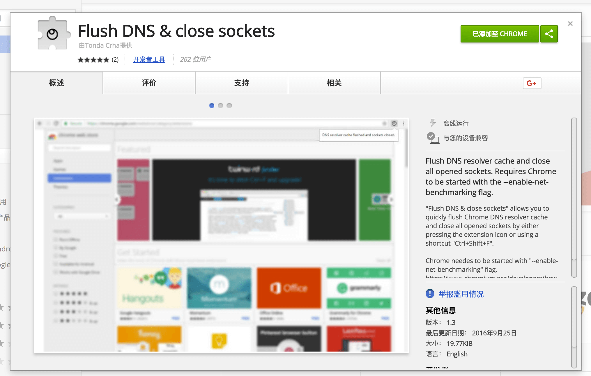
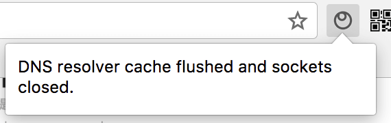
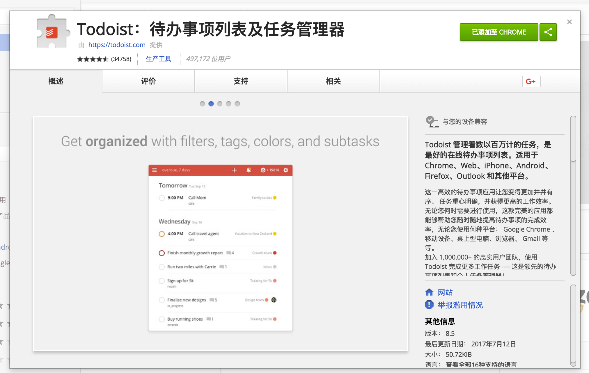
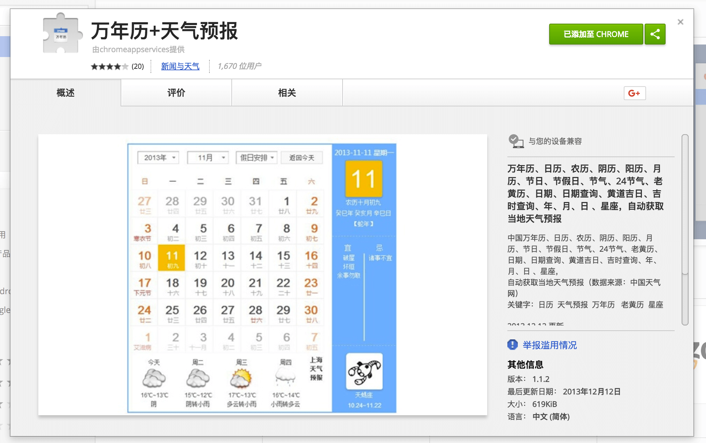
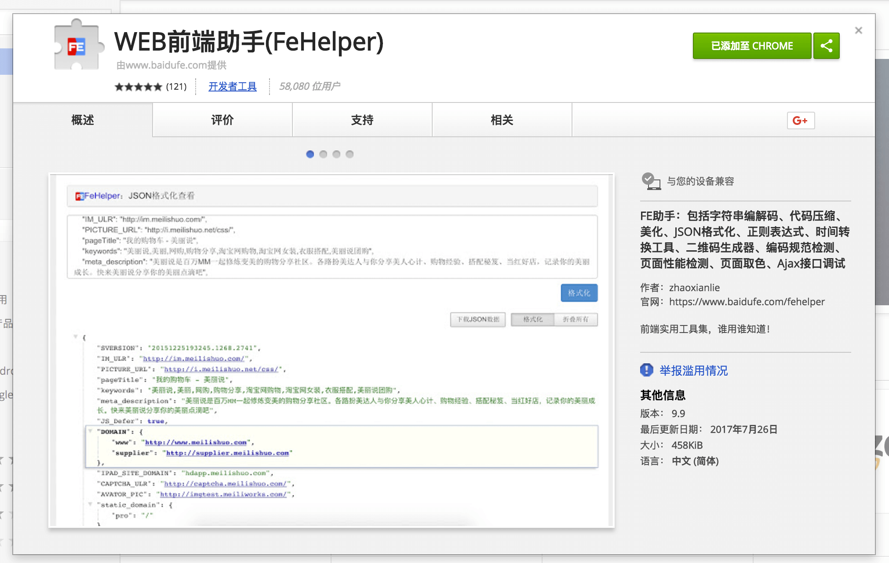
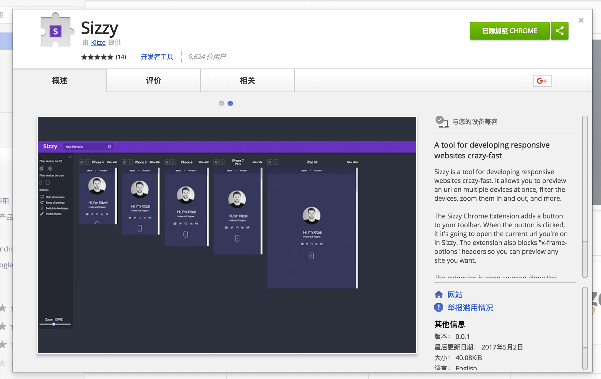
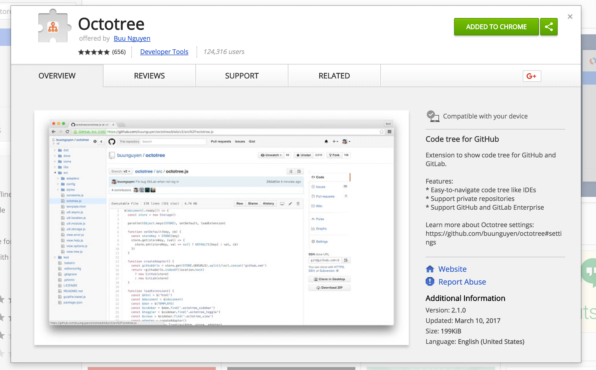
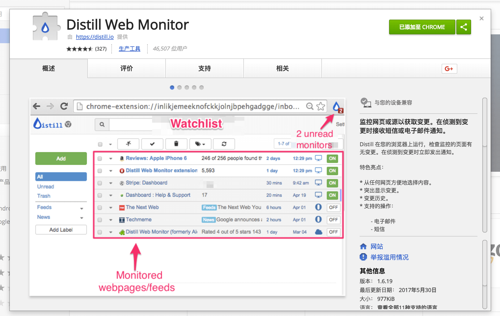
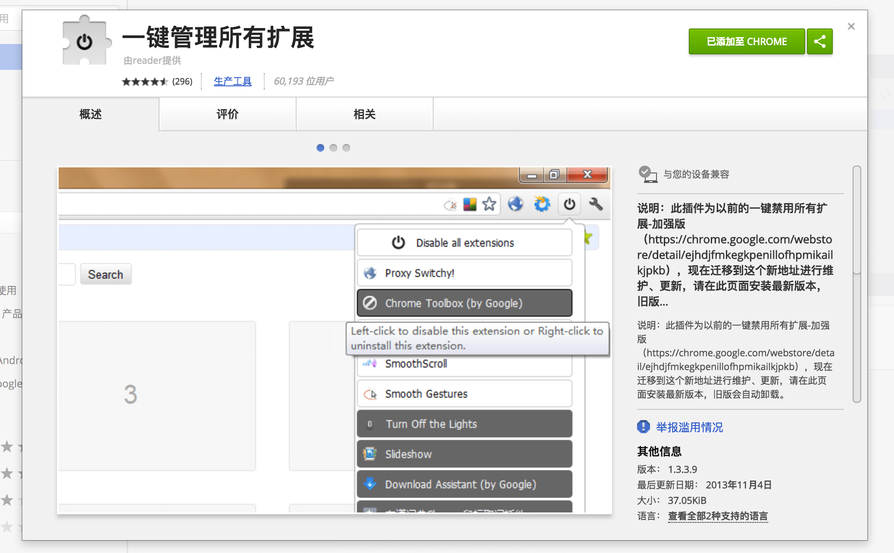

大家好，我的网名叫国内外大神们😄😄😄
有一天，女盆友（大概是骗人的）含情脉脉的问我：你觉得，每天陪你时间最长的是谁呀？
我脱口而出：chrome呀~💊
女盆友听完，脸上洋溢着幸福的微笑。(想知道为什么没有被打，接着往后看啊😄)
今天给大家推荐几款女盆友用了都不会打你的插件，谁用谁知道哦~
1，Flush DNS & close sockets
实际工作中，经常会遇到频繁切换host的场景，而因host缓存等原因，有时候把f5按烂都没用，有了它就不用担心你的f5啦。

mac开启步骤：
- 按照如下方式启动chrome：
open /Applications/Google\ Chrome.app --args --enable-net-benchmarking- 点击图标即可，如下即表示成功，即时的哦~

2，The QR Code Extension
测试，产品，运营，设计。。。通常对移动端程序员说的最多的一句话是什么？
来，让我扫个二维码。。。wtf。。。有了它，至少。。。你不用去草料(手动黑人问号，大概是因为。。。)手动粘贴复制了。。。
3，Todoist
喜闻乐见的todolist，把自己本周要做的工作写进去，至少方便发周报啊骚年，还有提醒功能哦~

4，万年历
这个有什么卵用啊，给产品排期啊😄，要不然是看啥时候放假啊。。。

5，fehelper
由百度团队开发，前端神器啊，包括常用的字符串编解码、JSON格式化、正则表达式、时间转换工具、页面取色等，再也不用去什么xx之家了。。。

6，sizzy
漂亮的测试小姐姐总是会耐心的跑来跟你说，这个手机，还有这个手机，手机，机。。。适配下。。。有了它，你就可以让小姐姐少拿几个手机过来给你适配了，开不开心😄

7，octotree
做为国际最大同性交友社区的一员，总是苦恼在线看代码费劲，有了它，你会越来越深入了解别人呢。。。

8，Distill Web Monitor
珍藏大神器，女盆友用了想夸你的那种。
每次看到博客类，技术类文章，就想关注作者以后的技术动向，一般的做法是用书签来保存页面，天真的以为自己会经常去看看，基本上是吃灰的节奏。有了它，你可以把你想要关注的作者的页面链接加入你的列表，每当该作者有更新的时候，就会给你发推送，惊不惊喜，意不意外😄，当然还适用于剁手党。。。

9，一键管理所有扩展
啥，插件装太多，chrome导航栏看上去像一坨shit一样，没关系，你可以一键管理啦~

到这里，国内外大神们用的插件就推荐完毕了，如果你有更多自己私藏，堪称神器的东东，欢迎留言分享和讨论。
ps：裤子都脱了就想知道，你女盆友为什么没打你啊？
。。。因为女盆友英文名就叫chrome😄😄😄